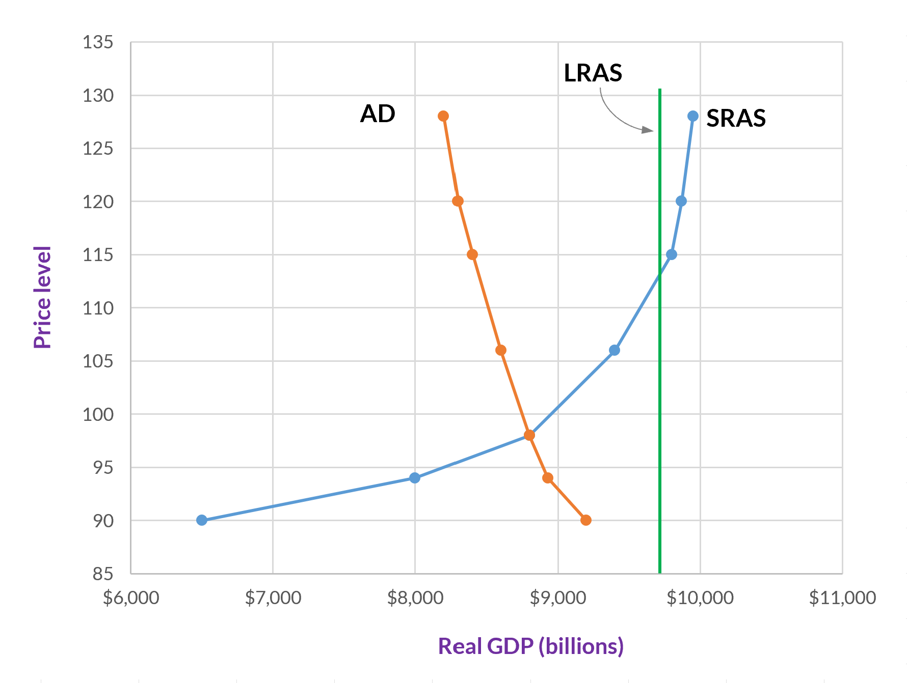
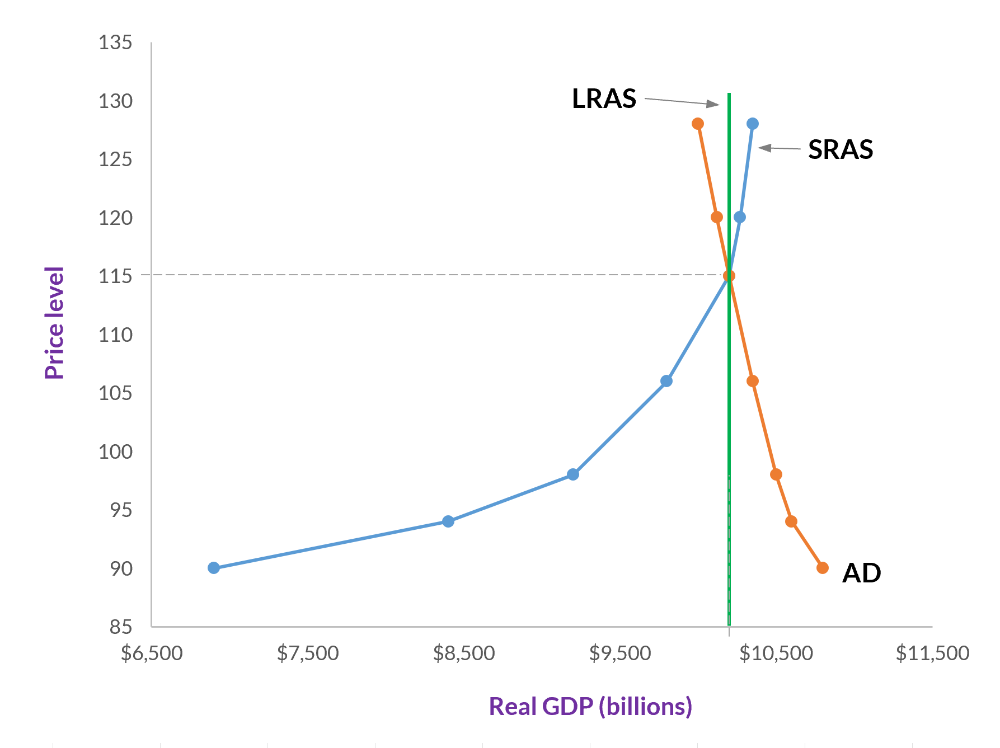
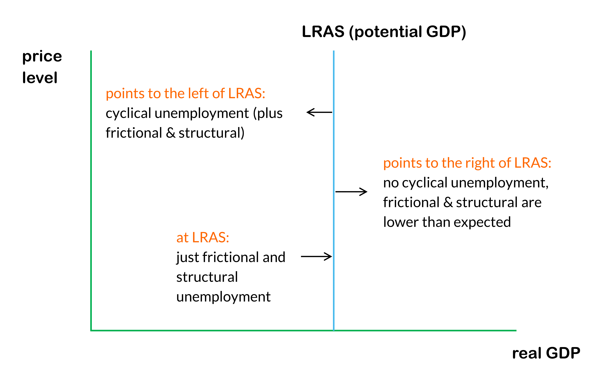
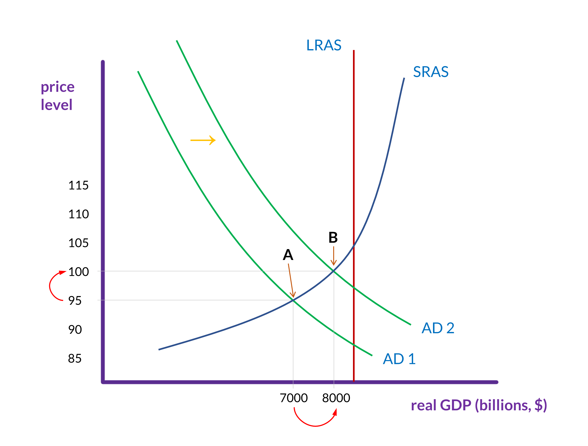

The AD-AS model
When put the aggregate demand curve and the aggregate supply curves together, we get a graph like the one shown in figure 1.

The point at which the aggregate demand (AD) and short-run aggregate supply (SRAS) curves intersect is the equilibrium.
Given the way that the model is designed, it’s not possible to deviate from the equilibrium.(1) The current real GDP just is the point where aggregate demand equals short-run aggregate supply. So, rather than being concerned with surpluses or shortages, the central issue now is the degree to which a particular equilibrium is benefiting society.
-
If we are looking at supply and demand for a single market (like we did earlier), then we know that there will be a surplus when the quantity supplied is greater than the quantity demanded.
In the AD-AS model, however, if suppliers produce extra inventory, it just gets counted in the investment portion of GDP. So, this “surplus” inventory is, by definition, part of the current aggregate demand. Therefore, there can’t really be a surplus in this model.
GDP, inflation, and unemployment
With the AD-AS model, we can represent changes to GDP, the price level, and unemployment. Since real GDP is on the horizontal axis, any change to aggregate demand or short-run aggregate supply that moves the equilibrium to the right will thereby increase GDP. Any change to aggregate demand or short-run aggregate supply that moves the equilibrium to the left will decrease GDP.
Changes to the price level (on the vertical axis) meanwhile indicate either inflation or deflation. Inflation occurs when the price level increases—for instance, if it changes from 100 to 103. And deflation occurs when the price level decreases.
Long-run aggregate supply is potential GDP, which is the point at which we have full employment (and all other economic resources are also fully engaged). Recall from Categories of unemployment that full employment is when there is frictional and structural unemployment, but no cyclical unemployment. Consequently, if the equilibrium is on the long-run aggregate supply curve—that is, all three curves intersect at one point—then there is zero cyclical unemployment. (See figure 1.)

Anytime the aggregate demand or aggregate supply curves shift such that the equilibrium moves to the left, unemployment increases. While anytime the equilibrium moves to the right, unemployment decreases.

Changes to AD and SRAS
If you recall demand and supply shifting in the supply and demand model, then the basic mechanics of aggregate demand or short-run aggregate supply increasing or decreasing will be familiar to you. But here, when such changes happen, we want to track the effects on GDP, inflation, and unemployment.
Remember, when we track these changes, the equilibrium occurs at the intersection of the aggregate demand (AD) and short-run aggregate supply (SRAS) curves. Where that intersection is relative to long-run aggregate supply (LRAS) matters, but, unless all three intersect at the same point, AD or SRAS intersecting with LRAS doesn’t mean anything.
Aggregate demand increases
When aggregate demand increases, the aggregate demand curve shifts to the right, and, as is shown in figure 4, the equilibrium changes from point A to point B. This means that the following will happen. (1) The price level will increase; in this case, from 95 to 100. (2) Real GDP will increase; in this case, from $7 trillion to $8 trillion. And (3) although the equilibrium is still to the left of long-run aggregate supply (i.e., potential GDP), it is now closer to that line.
This means that (1) there is inflation, (2) GDP has increased, and (3) unemployment has decreased.

Aggregate supply decreases
When short-run aggregate supply decreases, the short-run aggregate supply curve shifts to the left, and, as is shown in figure 5, the equilibrium changes from point A to point B. This means that the following will happen. (1) The price level will increase; in this case, from 100 to 105. (2) Real GDP will decrease; in this case, from $7.5 trillion to $6.8 trillion. And (3) the equilibrium is farther to the left of long-run aggregate supply than it was initially.
This means that (1) there is deflation, (2) GDP has decreased, and (3) unemployment has increased.

The AD-AS model
The AD-AS model is useful for understanding the macroeconomy and, to an extent, making predictions about the future. It will not always make precise predictions, however. We have accurate information about current GDP (real and nominal) and the price level, but that only gives us one point on the graph. The exact shapes of the aggregate demand and the short-run aggregate supply curve are estimates, as is the placement of the long-run aggregate supply curve. And predicting when and by how much the AD and SRAS curves will shift means anticipating how millions of people will react to economic changes such as increases or decreases in taxes, or to a rise or fall in energy prices.